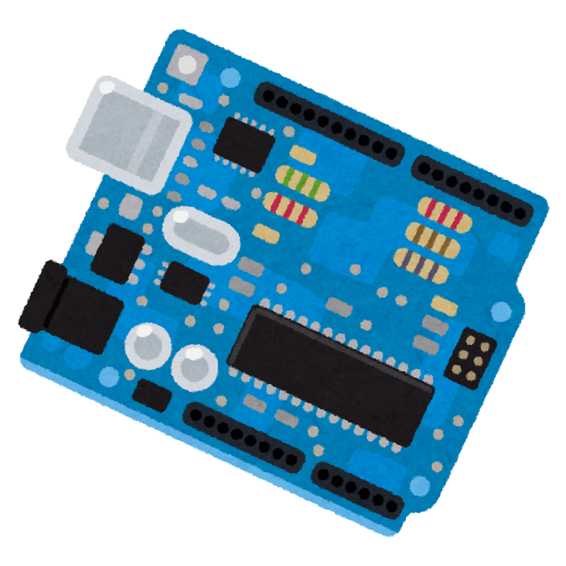
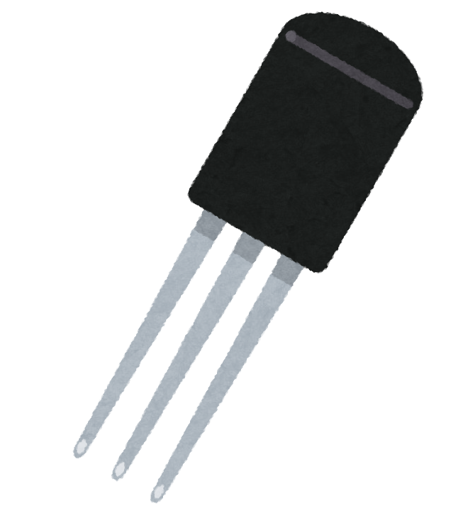
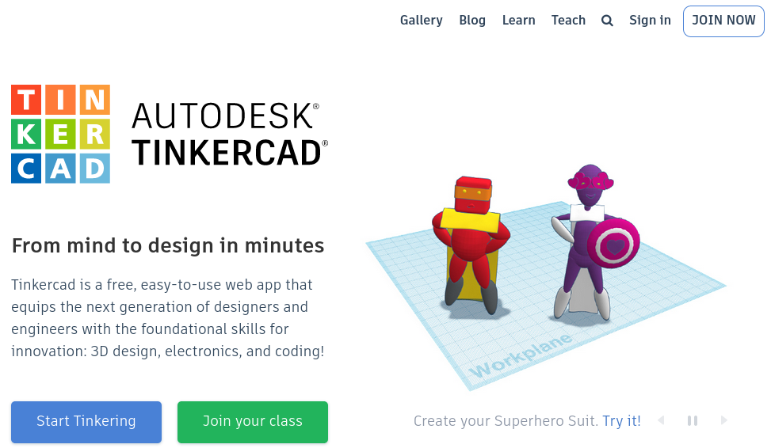
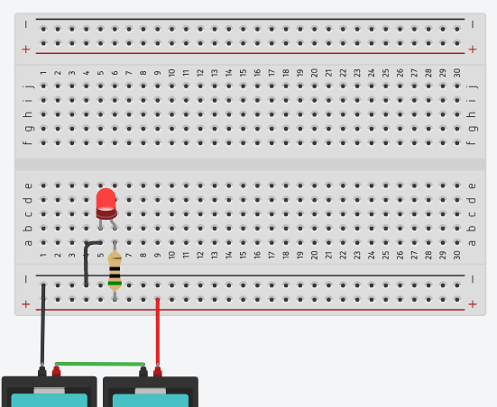
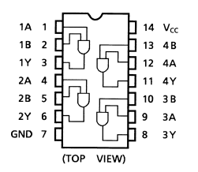
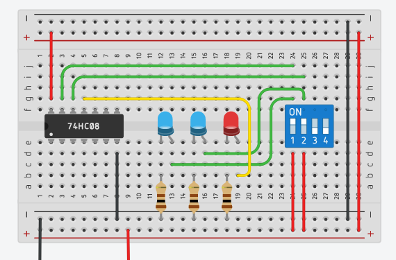

## <div style="border: thin solid; border-radius: 8px; padding: 8px; background: white;"><font color="midnightblue" style="text-transform:none;">Tinkercadを使った電子工作で<br>Lチカの壁を越えよう！😃</font></div> [盛岡版IoT縛りの勉強会！IoTLT盛岡 Vol.12](https://iotlt.connpass.com/event/224199/) <!-- <img src="https://pbs.twimg.com/profile_images/2577120213/74t8gdwg96vj93vg46a4_200x200.png" width="40" height="40"> --> [@furandon_pig](https://twitter.com/furandon_pig)
### 自己紹介 <img src="https://pbs.twimg.com/profile_images/2577120213/74t8gdwg96vj93vg46a4_200x200.png" width="80" height="80"> [@furandon_pig](https://twitter.com/furandon_pig) <p> 小さなWebアプリを細々と作っています。 * [ぬりえアプリ](https://furandon-pig.github.io/nurie/) * [Brocco.graph](https://furandon-pig.github.io/fpig_sample/hobby/brocco_graph/) * [ジャンプ作家風 巻末コメントアプリ](https://furandon-pig.github.io/jump_comment_app/) * [セリフ書き込みアプリ](https://furandon-pig.github.io/mmr-kitsune-san/) </p>
<br> ワンボードマイコン。
### ワンボードマイコンで電子工作 * ArduinoにLEDを接続 * スケッチでGPIOを操作 * これだけでLチカ(LEDチカチカ)が完成 電子工作をドンドン進めていこう！
<br>
### LED、光ったら満足しちゃう問題。
### LED、光ったら満足しちゃう問題。 * 電子工作、ワンボードマイコン、はてはFPGAでもとりあえず「Lチカ」 * 最初の一歩としては最適な題材 * では、Lチカの次のステップは...？
<br>
### いきなり！ハードウェア * Lチカの次のステップでいきなりハードルが上がる...🥺 * LEDは単に接続すれば良いけど、他のハードウェア(電子部品)ではデータシートを参照する必要がある * 学習が容易な電子部品を見つけたいけど、どれがそうなのだろう？
### LEDを光らせても、結局その次の<br>ステップがよくわからない...😭
<br> <a href="https://www.tinkercad.com/" target="_blank">https://www.tinkercad.com/</a>
### Tinkercad * Webブラウザで動作するCAD * 3Dモデリングや電子回路図が作成できる * <strong><font color="hotpink">電子回路のシミュレーション機能がある！</font></strong> * 電子回路図の作成 * 抵抗、LEDやタクトスイッチ等、電子工作で使用する基本的な部品が揃っている * AND,OR,NOT回路といった、いわゆるロジックICと呼ばれる電子部品も揃っている
### 電子工作の練習に最適！😃
<br> Lチカ。
<!-- <table border="0"> <tr> <td>  </td> <td>  </td> </tr> </table> --> <br> AND回路のサンプル。
### ロジックICのデータシート * 東芝CMOSデジタル集積回路 * [TC74HC08](https://toshiba.semicon-storage.com/info/docget.jsp?did=7496&prodName=TC74HC08AP)(ANDゲート) * [TC74HC32](https://toshiba.semicon-storage.com/info/docget.jsp?did=15799&prodName=TC74HC32AF)(ORゲート) * [TC74HC02](https://toshiba.semicon-storage.com/info/docget.jsp?did=6965&prodName=TC74HC02AP)(NORゲート)
### まとめ * LED、光ったら満足しちゃう問題。 * LEDを光らせた次のステップが必要 * Tinkercadによる電子回路の作成＋シミュレート * お手軽に電子回路の作成練習ができる🙂
## ご清聴ありがとうございました😃
## おまけ Tinkercadのデモ。